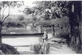
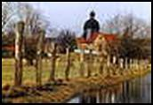
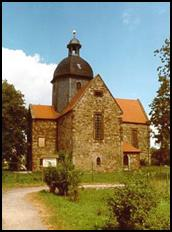
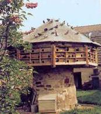

|
|
|
 Fähre

Reinsdorf - Lindenalleee Lindenallee

Kirche
 Taubenhaus |
Reinsdorf liegt nur zwei Kilometer nordöstlich vom Renaissanceschloss Vitzenburg entfernt und hat 700 Einwohner Nach der Niederlage des Thüringer Königs Herminafried (Irminafried) 531 in der Schlacht an der Unstrut wurde das Unstrutgebiet immer stärker in den fränkischen Machtbereich eingegliedert. Besonders dem vom Erzbischof Lullus 769/70 gegründeten hessischen Kloster Hersfeld gelang es, Besitz und Rechte dort zu erwerben und Missionierung und Kolonisierung durchzusetzen. In "Reginheresdorpf" - wie dem ersten Teil des zwischen 830 und 850 entstandenen Zehntverzeichnis des Klosters Hersfeld entnommen werden konnte - war das Kloster zehntberechtigt. Während der fränkischen Kolonisation legte ein gewisser "Reginher" im Bereich des heutigen Unterdorfs den Ort an. Flurnamen wie "Altenburg" und "Alter Kirchhof' erinnern noch heute daran. Das Oberdorf (Klosterdorf) entstand erst mit der Errichtung der Klostergebäude. Die Entwicklung Reinsdorfs in der Zeit der Karolinger und Ottonen ist eng mit der nahe gelegenen Vitzenburg verbunden - einer Burg, die die Aufgabe hatte, die fränkische Herrschaft gegen Sachsen und Slawen zu schützen. Um 1121 wurden im Kloster vier Altäre, darunter der Heilig-Kreuz-Altar, geweiht und am 21. April 1128 erfolgte die Weihe des Hauptaltars zu Ehren Johannes des Täufers. 1540 wurde das Kloster säkularisiert. Aus dem Klostergut entstanden drei Rittergüter. 1752 wurden sie zu einem Fideikomiss zusammengeschlossen. Das Gut stand am Südende des etwa 300 Meter langen Angers und wurde 1948 abgerissen. Die Grafen von Schulenburg-Heßler auf Vitzenburg bewirtschafteten es bis 1945. Die 1235 fertig gestellte und geweihte Kirche wurde im 16. Jahrhundert zur Dorfkirche umfunktioniert. Sie hat trotz Umbauten Reste des romanischen Baukörpers bewahren können. Von der einst dreischiffigen Kirche mit Querhaus und Chor blieb seit dem 17. Jahrhundert nur die Chorpartie mit dem Querschiff stehen. Ende des 17. Jahrhunderts erfolgte der Umbau zur evangelischen Pfarrkirche. Anfang des 18. Jahrhunderts wurde das Innere der Kirche prachtvoll mit Deckenstuck und Deckenmalerei ausgestaltet Die Kirche des ehemaligen Benediktinerklosters St. Johannes Baptista, aber auch das am östlichen Ortsrand 1780 aus Sandsteinquadern errichtete Pfarrhaus (Unterdorf 8) mit hohem Krüppelwalmdach und Fledermausgaupen, die Dreiseithöfe beiderseits des Angers und die schmucken Einfamilienhäuser prägen das Bild des Ortes. Das Grundstück in der Dorfstraße Nummer 8 hat eine Besonderheit zu bieten, die in früheren Zeiten sehr häufig anzutreffen war, aber heute kaum noch in der Unstrutregion zu finden ist. Im Hof steht ein hölzernes Taubenhaus. Es wurde Mitte des 19. Jahrhunderts auf einem säulenartigen Unterbau aus Buntsandstein errichtet. Bei der Restaurierung der Kirche 1964 bis 1966 wurden Teile romanischer Wandmalerei freigelegt. Eine 1994 eingeweihte Unstrutbrücke in der Nähe der Kirche ermöglicht Fußgängern und Radfahrern fernab vom zunehmenden Straßenverkehr eine Wanderung von Reinsdorf nach Nebra. In früheren Zeiten brachte die Fähre die Menschen auf die andere Seite der Unstrut. Zahlreiche vorgeschichtliche Funde im Gebiet von Reinsdorf weisen auf seine frühe menschliche Besiedlung hin.
|